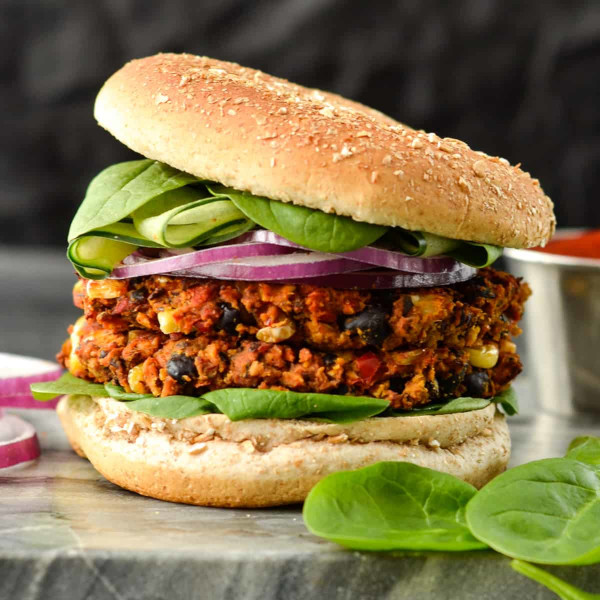

Best Southwest Veggie Burgers Ever

So, what is it?
If you like earthy, smokey flavors, this is the veggie burger for you.
These veggie burgers have just the right amount of sweetness and spice.
I like these on the spicy side, but you can tweak the heat level by adding more of or leaving out the spicier ingredients.
Bonus points: You can make the mix ahead of time and pop them in the oven for
an easy dinner.
What do you need?
- Sweet potato
- Cooked black beans
- Bell peppers or sweet peppers
- Jalepeno pepper
- Chili powder
- Smoked paprika
- Cumin powder
- Salt
- Fresh ground black pepper
- Egg or flax egg (see flax egg recipe below
Optional Ingredients
How to make flax egg
This is an easy to make vegan egg replacement. Honestly, you won't be able
to tell the difference between flax egg and chicken egg in this recipe.
- Add 1 tablespoon of ground flax seed to a small bowl.
- Add 1 1/2 tablespoons cold water to flax seed.
- Let mixture sit for at least five minutes until its sticky
and congealed.
How do you make them?
- Dice about 1 cup of bell pepper or sweet pepper. Cook in 1 tablespoon of olive oil and add pinch of salt. Cook until the peppers are tender.
- If you want a spicier burger, add 1 minced jalepeno to the peppers when the peppers are almost done. Cook for a minute or two until the jalepeno is fragrant.
- Measure out 3 cups of cooked and rinsed black beans.
- Microwave three medium-sized sweet potatos.
- In a large glass bowl, add 1 1/2 cups of sweet potato and mash it.
- Add beans and cooked peppers to sweet potato mash. Fold to incorporate.
- In a small bowl, mix together:
- 3 teaspoons cumin powder
- 3 teaspoons chili powder
- 2 teaspoons smoked paprika
- 1 teaspoon salt
- About a 1/2 teaspoon of black pepper
- Add spice mix to the black bean mix and fold to incorporate.
- If you want a nutrition boost, add 2 tablespoons of nutritional yeast and stir to incorporate.
- Add 1 cup of panko or, if you want a healthier binder, pulverized oats. You can pulverize regular oatmeal in your blender or food processor.
- Add egg or flax egg.
- Mix well. I suggest using your hands, but make sure the mixture isn't too hot
- Form into burger patties.
- You have two cooking options:
- Add about 2 tablespoons to the same pan you cooked in the peppers in heat to medium. Cook the patties for a few minutes until brown, flip, and cook another few minutes until brown.
- Bake them in the oven at 375 degrees Fahrenheit for about 30 minutes. Flip the burgers after about 15 minutes for best result.
- Once the burgers are done, shake a bit of Tajin on them to taste and enjoy!